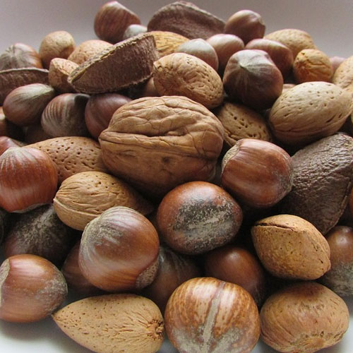

Welcome
tovgain
-
This site is my personal project to learn more about the nutrients in vegan food.
My goal is to divide vegan food into macros to show the muscle-building potential it has.
As you probably have seen, this page is divided into four pages, the three first pages are about macros (protein, carbs. and fats.) and the last one is about supplements (supps).
Nuts
Go nuts!
Roasted, smoked,
salty, sweet
The case for nuts doesn't end with fatty acids, which have been shown to help lower cholesterol levels among many other benefits.1
Nuts have also been shown to help provide an edge against stroke and type 2 diabetes, curb appetite, and encourage weight loss, as studies indicate that calories from nuts don't always correlate with the expected amount of weight gain. Nuts also give vegetarians a guiltless protein source that rivals any meat, and they mix well any number of diverse dishes.1
Seeds
Grow baby!
Natures tiniest
powersource
With all the buzz around the myriad health benefits of nuts, it's easy to overlook their even more diminutive counterparts.2
I'm talking about seeds, which prove that big things come in small packages. In fact, many seeds are absolute nutritional giants! Replete with healthy fats, protein, and a range of micronutrients, seeds can be your secret weapon to eating better than ever. Think of them as pint-sized foods with super-sized benefits. 2
beans
Where have you bean?
Garbanzo, black eyed, kidney, white, mung.. so many!
You’ve got a wide variety of kinds from which to choose though, all chock full of healthy nutrients and protein, in addition to fiber.3
Even prepared beans, such as baked and refried, can be bodybuilding friendly. Check labels on canned and prepared beans--some types can be loaded with unhealthy fats and salt, and you generally want to avoid canned beans that include bacon. Don’t worry though - with so many healthy versions available, you’ll have no problem choosing a bean that suits your tastes. 3